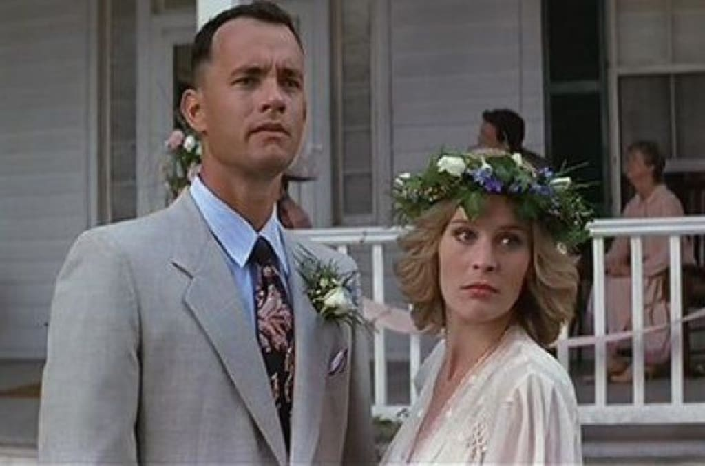

i watched this movie for the first time in 8th grade health class to prevent teen pregnancy. i like juno's character, she's very likable and cool. there were a lot of things that i didn't pick up on the first time that i watched it, but something that i did pick up on was the soundtrack. i've liked "so nice so smart" for the past six years. the ending was really nice, the way that she rode over to paulie's house with her skateboard and her guitar. and all the high school track scenes were nice too.
a league of their own ★★★★★
i like feminist-style movies like this, and a league of their own was no exception. i went into it knowing that madonna played someone, but i didn't know who. it ended up being mae. i liked her character. i also liked tom hanks' character, the way that he told dottie to chew gum, because "that's what all the real ball players do".
may
everything everywhere all at once ★★★★★
this was the third time i watched this movie, and i was doing other things the entire time, and i have headphones on, but i still mananged to pick up on how good it was.
march
shutter island ★★★☆☆
jump shots
effects
scary movie?
you cant save them all holden
leo is not sane (hallucinations)
rosenhan experiment
the lighthouse scene
the wolf of wall street ★★★★★
not many movies can pull off being three hours long, but this one does it well. it was another movie where leonardo dicaprio grows up poor, goes to new york city to make money in an unsavory way, gets far too into the party scene, and eventually meets his downfall.
february
the big short ★★★★☆
i liked this, but i subtracted a star because it's about econ and i don't really like econ that much. but this is about as good as it gets for a movie about stocks. it was very captivating how margot robbie, some chef, and selena gomez explained shorting bonds, bundles, and synthetic cdos, respectively. i liked the style as well, the way that the one character talked directly to the camera, sort of meta but in a good way, and how they showed freeze frames of events that were happening every time there was a time jump. my favorite scene was where the two brothers are exciting that they bet everything against the aa bonds, and ben says, "do you know what you just did? you just bet against the american economy. don't fucking laugh". he's right. it i think that this is a really well made movie.
a beautiful mind ★★★★☆
this movie is part of the genre that i like to call, "movies about genius men who are psychologically troubled". in this genre, we also have good will hunting, dead poets' society, and the social network. it's probably my favorite genre, so i had high expectations for this movie. watching this movie made me like math even more than i already do. i think it's tragic that this guy john nash was schizophrenic, because i guess illnesses really don't discriminite. it's like that meme of ben from parks and rec, where he holds up a stick man and says, "could a depressed person make THIS?", except it's john nash, holding up his nobel prize for nash equilibrium, saying, "could a psychotic person get THIS??", and the answer is, of course, yes, because psychosis can happen to anyone.
shakespeare in love ★★★★★
obviously i needed to watch the movie that beat out good will hunting for best picture. i was going to make a joke about how there was cross-dressing so this was derrivative of twelfth night, but seeing how the love interest's name is viola and it's a play about shakespeare, there is a slight chance that it was on purpose. there's all sorts of shakespeare references in the normal scenes, such as "words words words" in confession, and "it was the owl that shrieked", forshadowing viola's death, so i can only imagine how many references there were that i wasn't getting. it's a parallel of romeo and juliet, but i think it's also like romeo and juliet in the way that they aren't in love, just thirsty for bitches. i was sure that romeo got killed for real by the apothecary but i guess not!! queen elizabeth is a real one, "i know something of a woman in a man's profession".
january
mulan ★★★★★
this is excellent. it's a tragedy that i didn't watch this movie until i was in eighth grade music class with ms. c. some people say that and saving private ryan are the only movies that don't make light of war. the sound track is so good, there's only four songs which is the fewest out of any disney princess movie, but they are good songs that are necessary to the plot. 'i'll make a man out of you' is, without exageration, probably one of the most inspriational pieces of media to exist. it did wonders for fourteen year old me who was the worst person on cross country. mulan does not pass the bedchel test, which completely undermines the validity of that test because mulan is extremely feminist.
forrest gump ★★★★★
out of the two hours and twenty three minutes that this movie lasted, there was not one minute that was not extremely captivating. it may be basic, but besides good will hunting, i consider it my other favorite movie of all time (i think that the two of them are opposites). it's quite the tragedy that in the end, bubba, jenny, and forrest's mom were all dead. but it's nice that even though he was stupid, forrest gump still did excellent things. i think that jenny and forrest were both floating through life all accidental-like on a breeze and it turned out very well for forrest, and very badly for jenny. sometimes there just aren't enough rocks. and that's all i've got to say about that.
in the heights ★★★☆☆
i was obsessed with this musical in 2019, so when the movie came out in 2021, i was obviously thrilled. however, after having watched it for the second time on the airpline on the way back from california, it's not all that. the main characters seem to have no underlying motivations and things just happen to them. it seems too shiny and cgi to be about growing up poor in new york city, perhaps that effect should be reserved for the gatsbys of the world. i also don't like how they changed a lot of the parts from the broadway musical. why does nina's mom have to be dead? what purpose does that serve? however, i think that nina and vanessa are the two baddest bitches that anyone could be and i aspire to be like both of them. they definitely pass the bechdel test.
december
rent ★★★★★
this was extremely good, and there's a lot that i could say. the songs were good, and the characters were likable to the point that it was actually kind of tragic when they died (or got sick in mimi's case). i'm sure that it had some sort of cultural impact, with it being about aids in new york, something that was not far away in 2005 when rent was released. i like the whole avant garde performance art protest thing that maureen does, that was fun, cyberland is cool. i also like how it takes place over the course of a whole year. any time that a movie does that, it reminds me of to kill a mockingbirg, where scout is standing on the steps of boo radley's house reflecting on the past year.
the sound of music ★★★★★
i've watched this movie about 50 times, but i think that about 80% of those times where when i was under the age of ten and couldn't stay awake until the end. so i've only seen the ending a few times. it's so long that i space out for some parts when i watch it, but this is nice because i notice something new every time. this time, i noticed that captain vonn trapp called maria 'captain' on accident. i also thought that rolf didn't give away their location at the end, he just shined the flashlight and saw liesel and walked away without saying anything. perhaps that was true in the play version that i saw with my family, but in the movie, that's not how it happened. he ended up getting scared of captain vonn trapp after he took the gun and running to tell the guards where the family was hiding.
november
legally blonde ★★★★★
this doesn't fit my theme of non-bedchel movies, but it's one of my all-time favorites. probably one of the most defining movies for third-wave feminism, all the ideas in it hold true to today. all men should watch this movie but unfortunely none of them will because it's got the word 'blonde' in the title and she's wearing a pink dress on the front. adam ran upstairs because it is a girl movie. it's excellent how she can be both a laywer and a dumb blonde, all the other lawyers were not capable of this. as eva said about something completely unrelated, it's more impressive to do both. elle woods is a good role model for small children, i am glad i watched this when i was in elementary school.
the social network ★★★★☆
i watched this movie because it's ashwin's favorite, and honestly i don't think i understood it or appriciated it as much as he did. in fact, he said that "if zuckerberg had kept facebook as he originally intended (like an exclusive online final club) it would have never taken off the way it did but he would not have had to testify before congress that he did not sell millions of people's data to advertisers". but this is my review, not his, and i think it's hard to tell if zuck is the protagonist or the antagonist and i constatly found myself being confused on who to root for. he wanted to distinguish himself in a population of people who all got 1600s on their SATs, and he did, so who's to say he did it the wrong way? he did what he had to do.
good will hunting ★★★★★
this movie is probably my favorite of all time. i just noticed how the whole "do you just come in here and quote textbooks" scene from the bar and the "i can't learn anything from you that i couldn't read in some fuckin' book" scene from the park bench are esentially the same which i think is interesting. i really like the whole park bench scene, i could probably quote the entire thing and i think that whole monologue is so well written especially with it being the first time in the movie will shuts up. also the monologue that chuckie gives about "if you're still here in twenty years..." is excellent and i think that chuckie is the true unsung hero of the movie, just wanting the best for will this whole time.
"all the bright and precious things fade so fast, and they don't come back."
daisy and nick at a dinner party
"and why'd you sneak around at night and finish other people's formulas that only one or two people in the world could do and then lie about it? 'cause I don't see a lot of honor in that, will."
a janitor drawing pictures on the blackboard instead of cleaning
"i don't know if we each have a destiny, or if we're all just floatin' around accidental-like on a breeze. but i think maybe it's both."

forrest gump marries the love of his life, jenny (867-5309)
"godspeed, and good luck to you."
drill team six getting ready to save the world from an asteroid